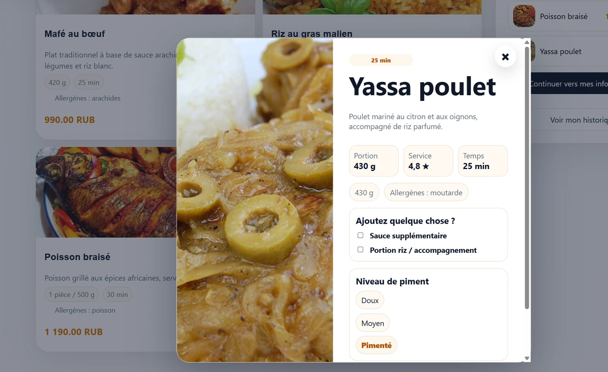
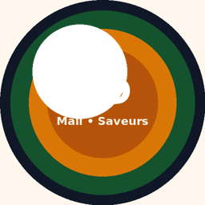
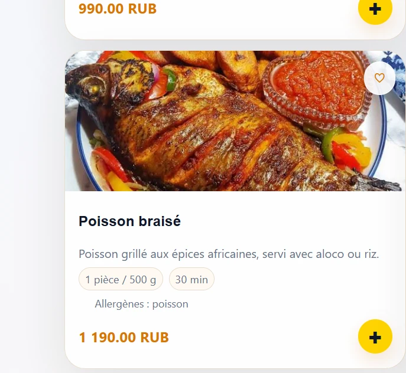
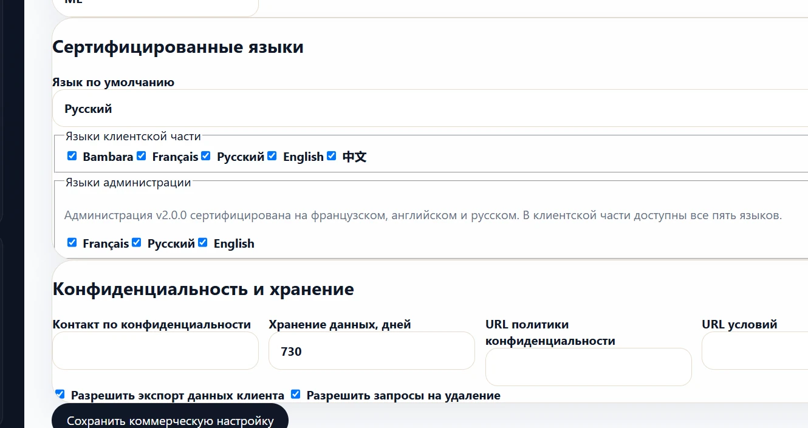
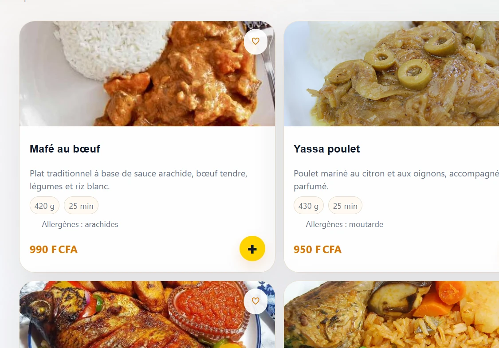
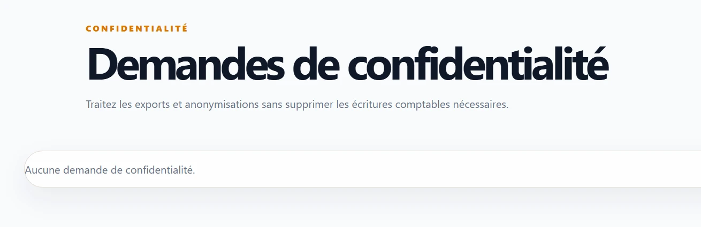
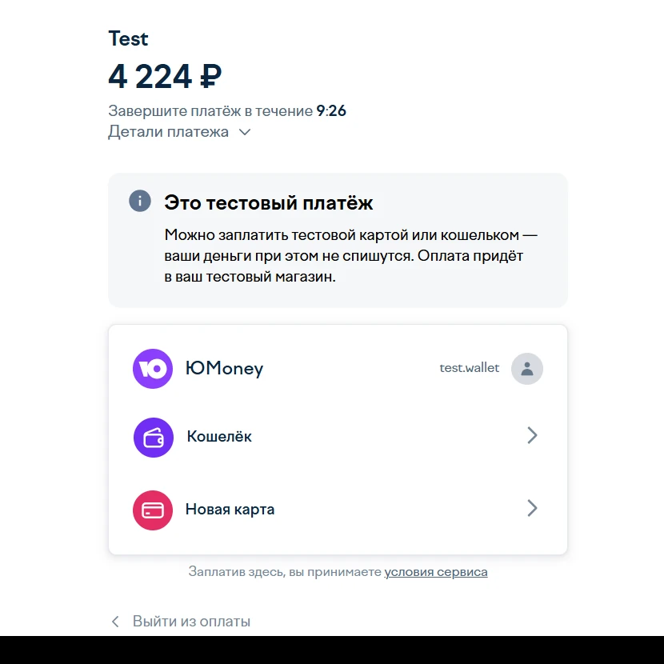

Commande client
Menu responsive, commande invitée configurable, compte sécurisé par OTP, réservations, fidélité, support, avis et suivi.
INTERNATIONAL · WHITE-LABEL · OPÉRATIONS RESTAURANT
Une plateforme web structurée pour des installations indépendantes par restaurant : commande publique, comptes clients sécurisés, espaces employés, paiements, fidélité, analyses, confidentialité et identité visuelle configurable.
Les démos publiques peuvent nécessiter un court réveil après une période d’inactivité. Utilisez uniquement des données personnelles fictives.

PÉRIMÈTRE PRODUIT
La plateforme relie l’expérience publique aux espaces de travail du propriétaire, de la caisse, de la cuisine, de la livraison et de l’assistance.
Menu responsive, commande invitée configurable, compte sécurisé par OTP, réservations, fidélité, support, avis et suivi.
Commandes, caisse, cuisine, livraison, rôles, stock, recettes, fournisseurs, rapports, coûts et marges.
Marque, pays, devise, langues, polices, couleurs, angles, bordures, images et politique d’accès.
FastAPI, PostgreSQL, Alembic, Docker, PWA, sauvegardes chiffrées, CSRF et journal d’audit.
DÉMONSTRATIONS PUBLIQUES

MALI · XOF
Menu public, commande invitée, OTP e-mail Brevo, compte client sécurisé, Web Push et paiement à la réception.
RUSSIE · RUB
Installation russe avec checkout YooKassa Sandbox, confirmation serveur, webhooks et remboursements partiels/totaux testés.
DESIGN STUDIO
Le propriétaire peut régler les couleurs, la typographie, les angles, les bordures, les ombres, le ratio des images, le mode cover/contain, le point focal et le comportement du carrousel.


OPÉRATIONS ET ANALYSES
Commandes, chiffre d’affaires, panier moyen, coûts matières, marge brute, dépenses et performance nette.
Meilleures ventes, quantités, revenu par plat, associations fréquentes, disponibilité et stock.
Historique d’achat, meilleurs clients, bonus, avis, recommandation et signaux de rétention.
Suggestions basées sur l’historique, les associations, les catégories complémentaires, les plats mis en avant et la disponibilité.
Les analyses actuelles sont descriptives et orientées aide à la décision. Le machine learning prédictif appartient à un futur projet Data Science.
ÉCRANS RÉCENTS



MODÈLE D’ACCÈS CLIENT
INTÉGRATIONS — STATUT HONNÊTE
| Capacité | Statut v2.1.1 | Précision commerciale |
|---|---|---|
| OTP e-mail Brevo | Fonctionnel | Utilisé par la démonstration Mali. |
| Web Push VAPID | Fonctionnel | Abonnements chiffrés au repos. |
| YooKassa | Sandbox validé | Checkout et remboursements de test ; le mode réel exige un contrat marchand éligible. |
| PayDunya | Temporairement désactivé | Connecteur conservé ; le sandbox externe doit être confirmé par le fournisseur. |
| Stripe | Connecteur disponible | Non activé dans les démonstrations publiques actuelles. |
| Paiement au restaurant / à la livraison | Disponible | Méthode de secours indépendante des fournisseurs en ligne. |
SÉCURITÉ ET CONFIDENTIALITÉ
PREUVES DE QUALITÉ
PROCHAINE PHASE PRODUIT
La plateforme web stable restera le backend et l’administration de référence. Le prochain projet séparé ajoutera l’authentification mobile par token, la révocation par appareil, l’enregistrement Push natif, le menu, le panier, les commandes, le suivi et les deep links de paiement.
VITRINE PUBLIQUE UNIQUEMENT
Ce dépôt contient la présentation, des visuels anonymisés, l’architecture et les preuves de qualité. Il exclut volontairement les identifiants, données clients, sauvegardes et le code commercial complet.